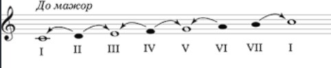
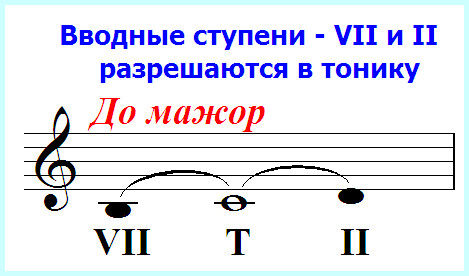

Урок 7. Тоника. Устойчивые и неустойчивые ступени. Вводные звуки.
Теория
Тоника — это главная нота в гамме, с которой начинается и на которой заканчивается большинство мелодий. В гамме До мажор тоника — это нота До.
- Устойчивые ступени — это ноты, которые звучат спокойно и завершённо. В мажорной гамме это I (тоника), III (терция) и V (квинта) ступени (например, До, Ми, Соль в До мажоре).
- Неустойчивые ступени — это ноты, которые стремятся разрешиться в устойчивые. Это II, IV, VI, VII ступени (например, Ре, Фа, Ля, Си в До мажоре).
- Вводные звуки — это седьмая ступень гаммы (например, Си в До мажоре), которая особенно сильно стремится к тонике.
Устойчивые ступени создают ощущение покоя, а неустойчивые — движения и ожидания разрешения.
В мелодии часто встречается чередование устойчивых и неустойчивых ступеней, что делает музыку интересной и выразительной.
Вводный звук почти всегда разрешается в тонику, особенно в конце музыкальной фразы.
Упражнения
- Распознавание ступени: Определите, является ли ступень устойчивой, неустойчивой или вводной (До — устойчивая ступень (тоника); Ми — устойчивая ступень (терция); Си — неустойчивая ступень (вводный звук); Фа — неустойчивая ступень).
- Пение: Пропойте устойчивые и неустойчивые ступени гаммы До мажор (До, Ми, Соль, Си, До).
Аудио-примеры
Устойчивые и неустойчивые ступени в До мажоре:
Вводный звук и его разрешение:
Визуальные примеры
Устойчивые и неустойчивые ступени на нотном стане:

Вводный звук в гамме:
